前回はPCLのビルドが通らない問題を解決しました。
Problem
これまで、iOSでデバッグしてみましたが、Android Emulatorを使ってみようとして、動かないので放置してきましたが、解決に向けて腰を上げました。 まず、問題としてiOSのようにエミュレータが表示されていないのが問題と思いました。 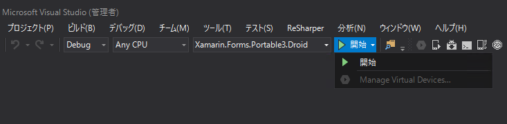
{kind=link}
エミューレーターがない
なので、これを追加します。
Resolution
Visual StudioのツールバーのAndroid SDK Managerを起動します。 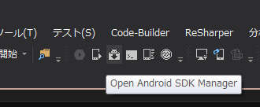
{kind=link}
Android SDK Managerの起動ボタン
もしくは、スタートメニューから [Xamarin] -> [Platform Tools] -> **[Android SDK Manager]**と選んでも良いです。 個人的にはvisual Studioを落としておいて、後述の方法で起動した方が良いと思います。 起動すると下記のような画面になります。 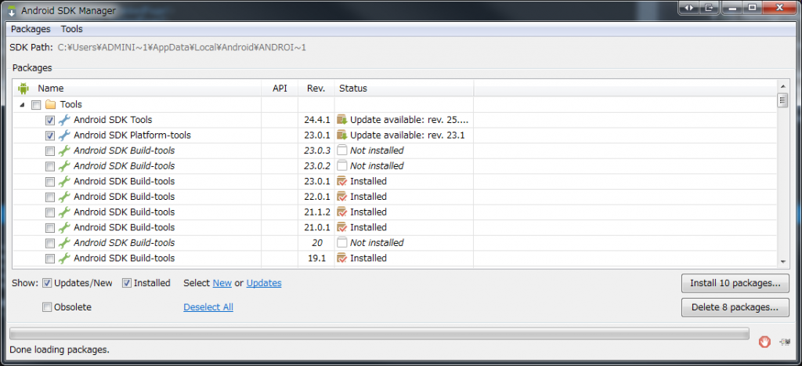
{kind=link}
Android SDK Manager
右下にアップデートがあることを示すボタンがあるので押下します。 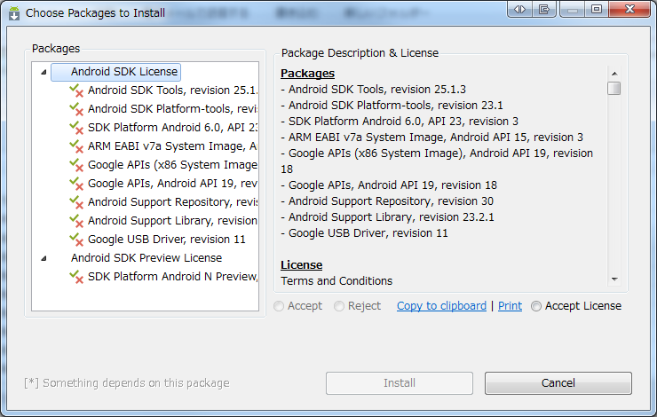
{kind=link}
ライセンス条件の了承確認
了承して進めていきます。 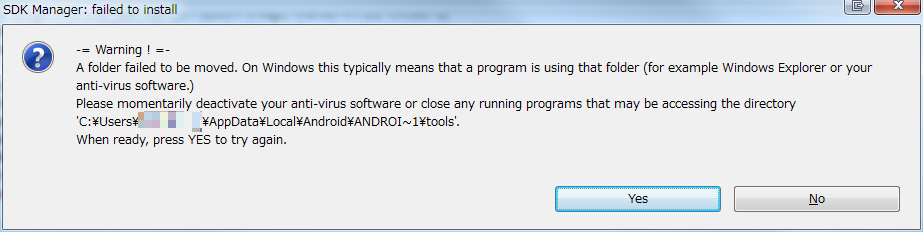
{kind=link}
無慈悲なエラー
途中、インストール先のフォルダを移動できない、というエラーメッセージが表示されました。 別のアプリがフォルダをロックしているのでしょう。 Visual Studioを終了させて、スタートメニューから起動する方法でやり直したら私は上手くいきました。最悪再起動してやり直すことも必要かもしれません。 インストールが終わったら、Visual Studioを起動or再起動してみるとエミュレータが追加されます。 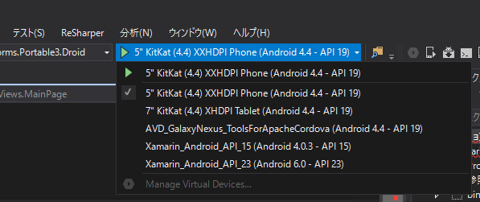
{kind=link}
エミュレータの追加
これから、デバッグして起動することでエミュレーターが起動します。 Xamarin_Android_API_23ってやつを選びました。最新みたいだし。
がとてつもなく、遅い。冗談抜きで5分以上待たされる。 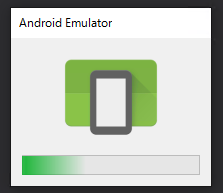
{kind=link}
起動中のスプラッシュスクリーン
この画面の後、真っ黒な画面で待たされる。 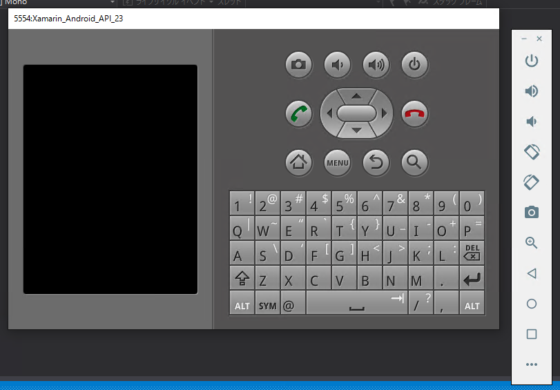
{kind=link}
真っ黒
少し変化したが、さらに待たされる。 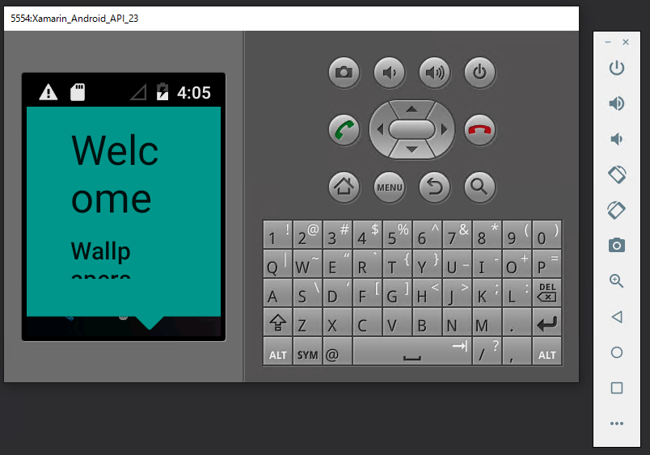
{kind=link}
何か出た
ふと気づくと、Visual Studioとエミューレーターの接続が切れているのか、ビルドのキャンセルボタンが押せなくなっている。 イラッ、としつつ再度デバッグする。 さらに待たされて、ようやく起動した。 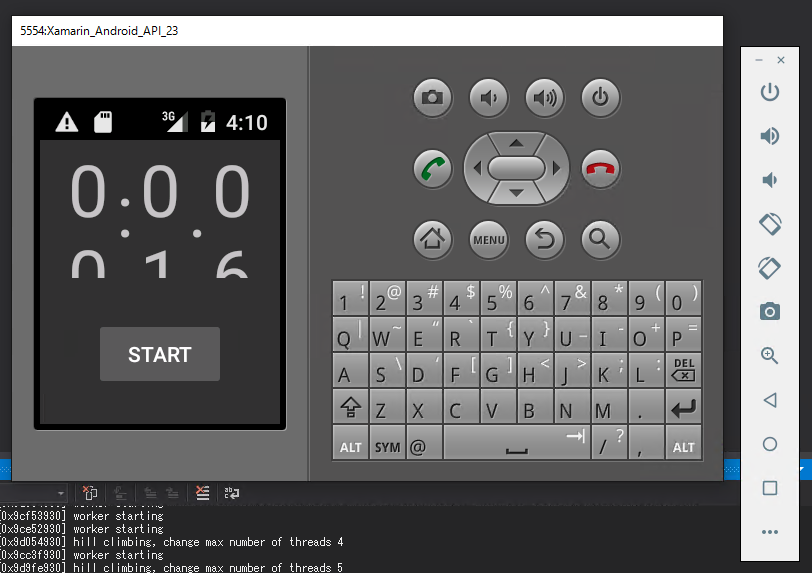
{kind=link}
ようやく出た
画面ちっさいし… 推測するに、何もエミュレータが起動していない状態からデバッグしようとするとタイムアウトしてしまうのでは？ ただ、それでも遅いときは遅いし、デバッグできないときがある。 ためしに、エミュレータを変えてみる。 **7” KitKat（4.4）XXXHDPI Phone(Android 4.4 - API 19)**ってやつ。
超速い (前のと比べて。別にiOS Simulatorよりも速い、というわけでもない)。
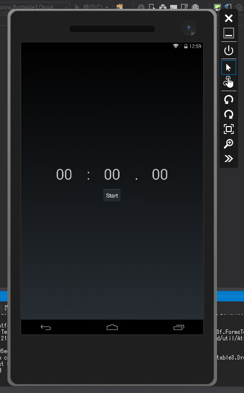
{kind=link}
しかも何かかっこいいし。 nuits.jpさんによればViaual Studio Emulator for Androidなるものらしい。 なるほど、最新が良いとは限らない訳ね。
Conclusion
Androidのデバッグは、iOSのデバッグよりも面倒でした。 どうも、Xamarin Android Playerなるものがあるらしいので、それを使いたいと思います。